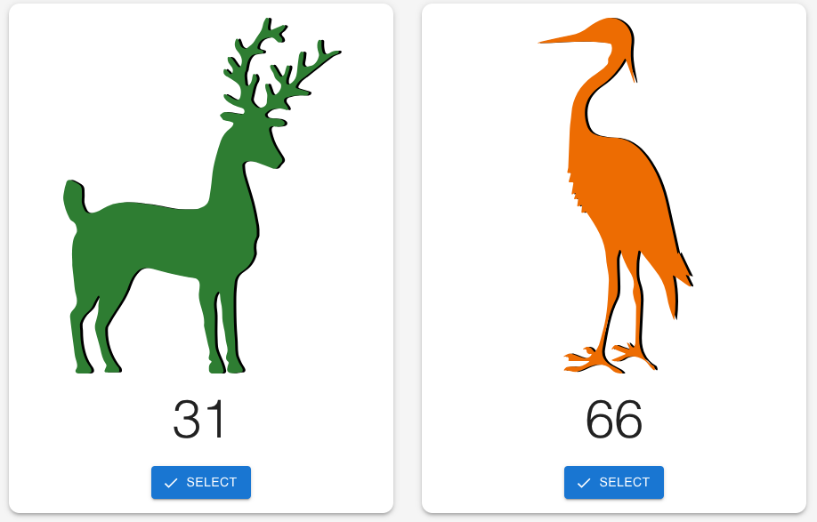
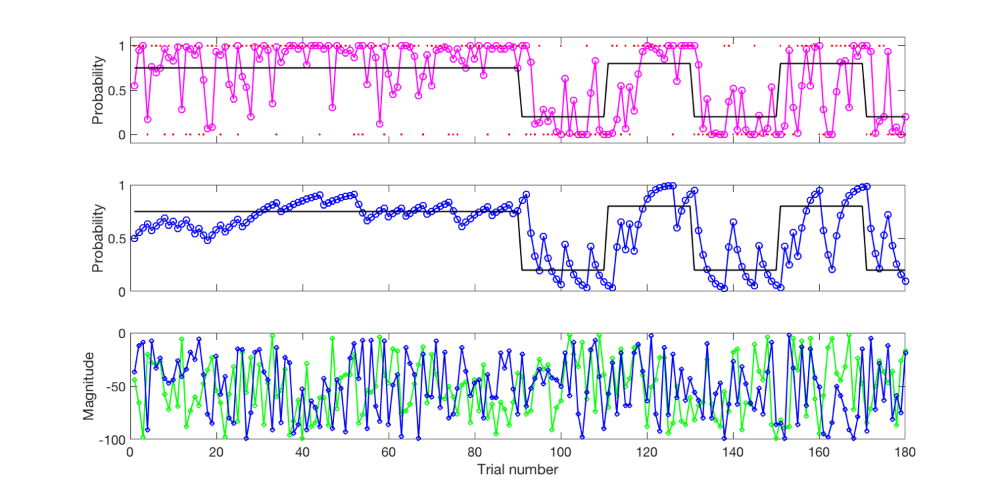
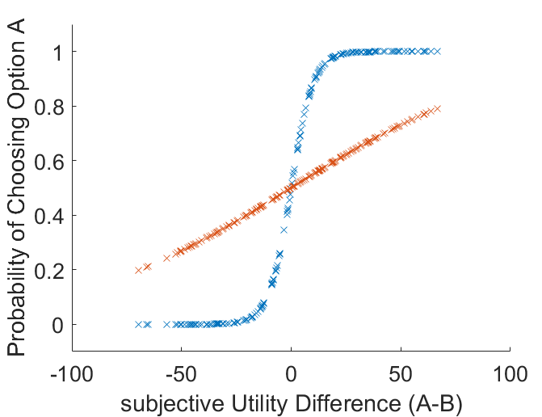
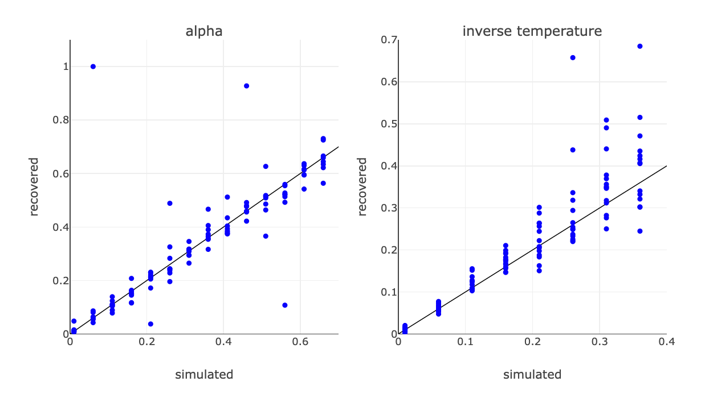
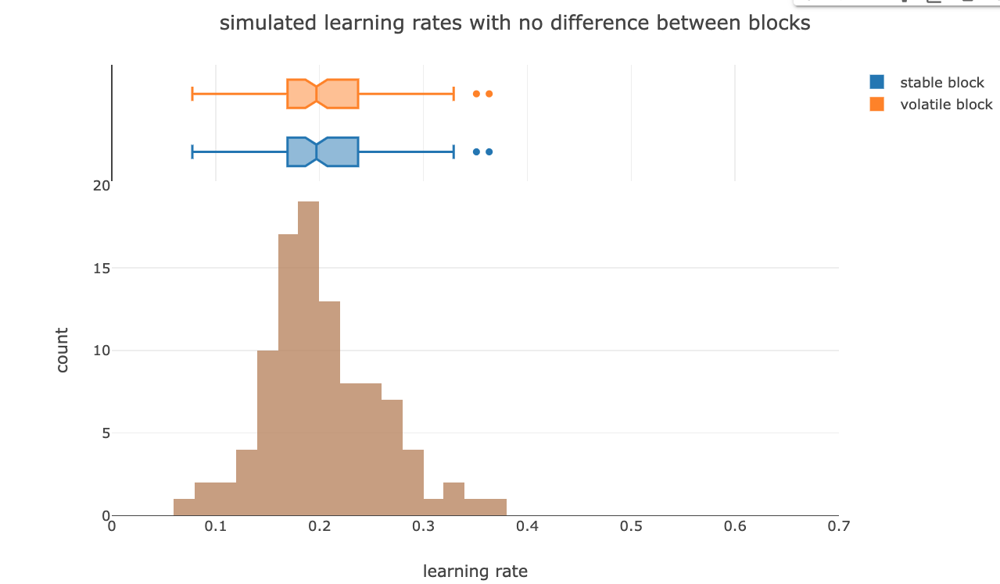
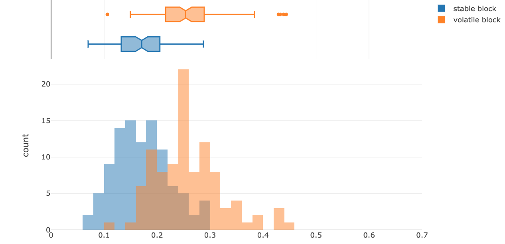
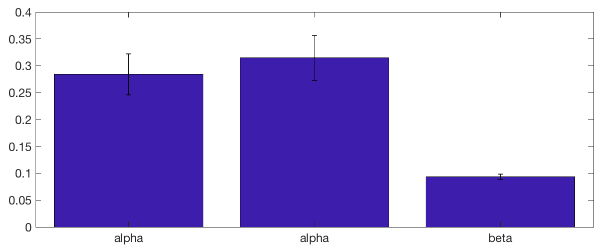
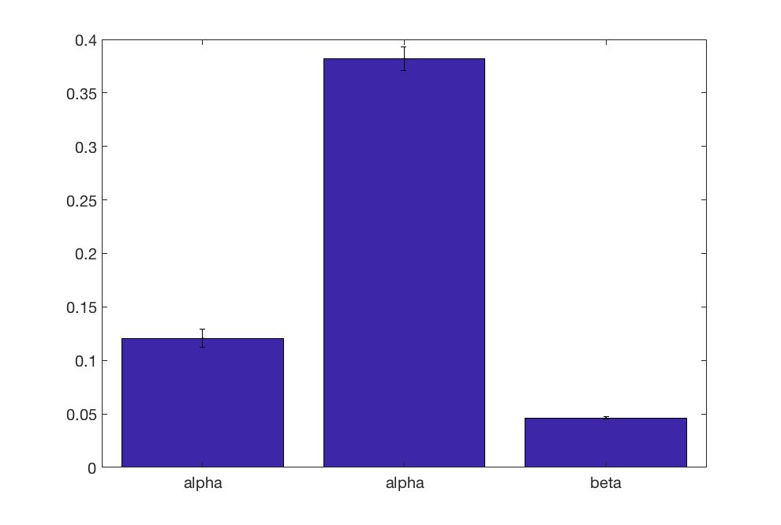
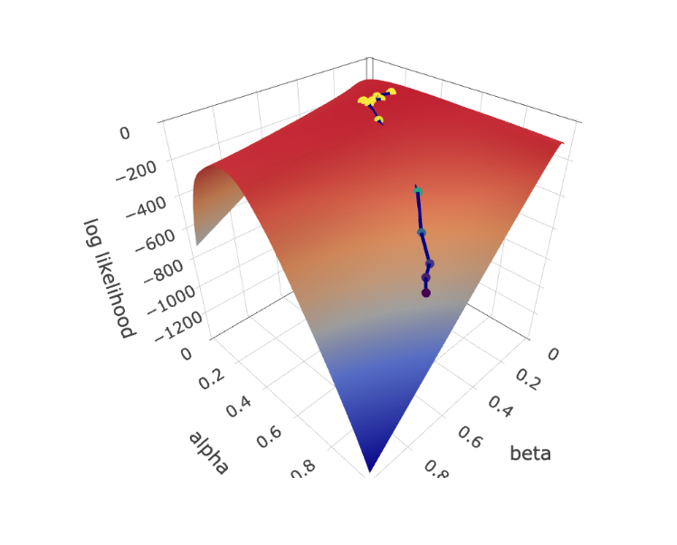
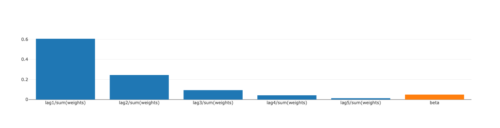

Advanced Lab · Session 2 of 4
Organisers: Dr Jan Grohn · Dr Miriam Klein-Flügge
Department of Experimental Psychology, University of Oxford
Week 1
Week 2 today
Week 3
Week 4

How do we learn across time which stimulus is more likely to be rewarded?
How do we decide between different options?
Behrens et al., Nature Neuroscience, 2007
How do we learn, over time, which choices are more rewarding?
Stable vs volatile blocks
How do we decide between different options?
Random reward magnitudes (points), drawn independently of the probabilities

Behrens et al., Nature Neuroscience, 2007
On each trial the model compares what happened with what it expected, and moves its expectation a fraction of the way towards the outcome:
$o_t = 1$ if option 1 (green) was rewarded and $0$ if option 2 (orange) was; $\alpha$ is the learning rate, with $0 < \alpha \le 1$.
By comparing the speed of learning ($\alpha$) in the volatile and the stable phase, we can test our first hypothesis: how fast we learn and adjust our behaviour depends on how quickly the environment is changing.
Last week you saw what a high and a low $\alpha$ do to the model's estimate. Today we give the model a way of turning that estimate into a choice.
The model tracks a probability. The task also shows points. Something has to put them together into a single number that choices can be based on.
or, less optimally, a weighted sum
A utility for each option is still not a choice. The model needs a decision rule that turns the difference between the two utilities into the probability of picking one of them.
That probability is what we will later compare against what a participant actually did, which is how the model gets fitted at all.
If utility of A > utility of B, always choose A.
If utility of A < utility of B, always choose B.
The step sits at the indifference point, where the two options are worth the same.
Complete the Colab notebook up to the beginning of Section 2, “Creating simulations from the model”.
You will write the softmax yourself, and see what changing $\beta$ does to the model's choices.
$\beta$ is the inverse temperature. The higher it is, the steeper the curve, and the less often the model takes the worse option.
The name is an allusion to thermodynamics: a high temperature, meaning a low $\beta$, means particles moving at random, so behaviour is noisier.

Part two
The key advantage of simulating data is that we know the ground truth: we chose the parameters, so we can check whether fitting gets them back. With real participants there is nothing to check against, so this has to be done before anyone is tested.
Palminteri et al., TiCS, 2017 · Wilson & Collins, eLife, 2019
Plot the parameter you simulated with against the one you recovered, for many simulated participants. On a task that can measure what you want, the points sit on the diagonal.

Session 1. A reinforcement learner, free parameter $\alpha$.
Session 2. Combine magnitude and probability into a utility, then feed the difference in utility into a softmax with free parameter $\beta$.
Session 2. To simulate a choice, compare the choice probability against a random number.
Later, a learner with two learning rates, $\alpha_S$ and $\alpha_V$, one for each block.


Either way you find out before collecting a single participant, which is the whole point of doing it first.
Palminteri et al., TiCS, 2017
Simulate every participant with a single $\alpha$ across both blocks, then fit the two-learning-rate model to the result.
If the fitting invents a difference that was never there, a difference in the real data would mean nothing.

Now simulate with two learning rates, $\alpha_S$ in the stable block and $\alpha_V$ in the volatile one, and fit the same model.
If the difference does not come back out, the task cannot measure the thing the whole study is about.

Complete the remaining exercises in the Colab notebook.
You will run both simulations and see whether the task can tell them apart.
Part three
A good fit assigns a high choice probability to the choices the participant actually made.
So for a given $\alpha$ and $\beta$ we can compute, trial by trial, how likely the model thought the observed choice was — and multiply those together across trials.
Taking logs turns the product into a sum, which stays representable. Fitting maximises this, or equivalently minimises its negative.
Start somewhere on the landscape, work out which way is uphill, take a step, and repeat until the ground is flat.
This is what the fitting routine in the notebook does, from ten different starting points, keeping whichever run ends highest.

Plot each simulated parameter against its recovered value. The closer to the diagonal, the better the task measures that parameter.
Together these say the task can find the effect when it is there, and does not invent it when it is not.
The optional section shows that the model can be written as a logistic regression, with the regression weights standing in for $\alpha$ and $\beta$.
